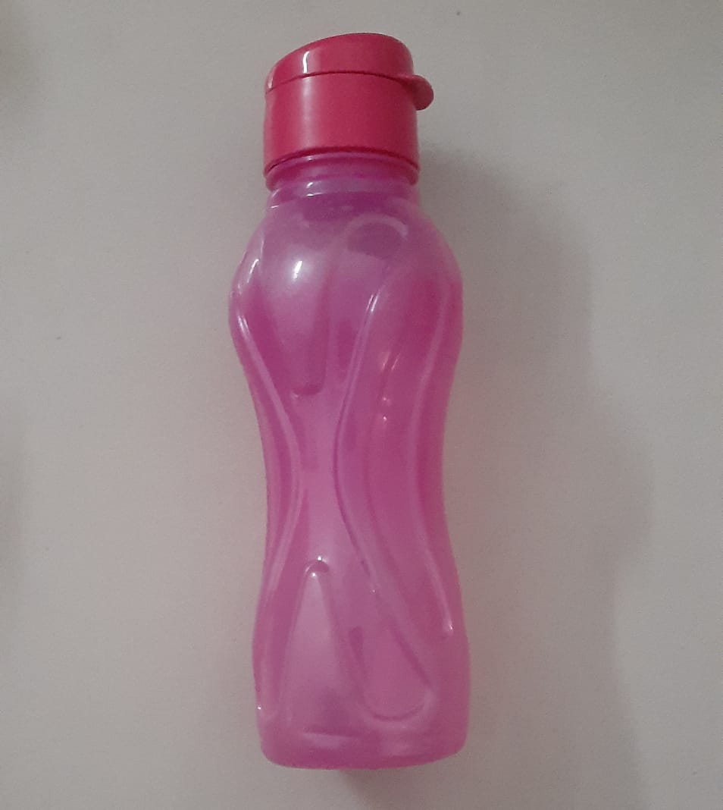
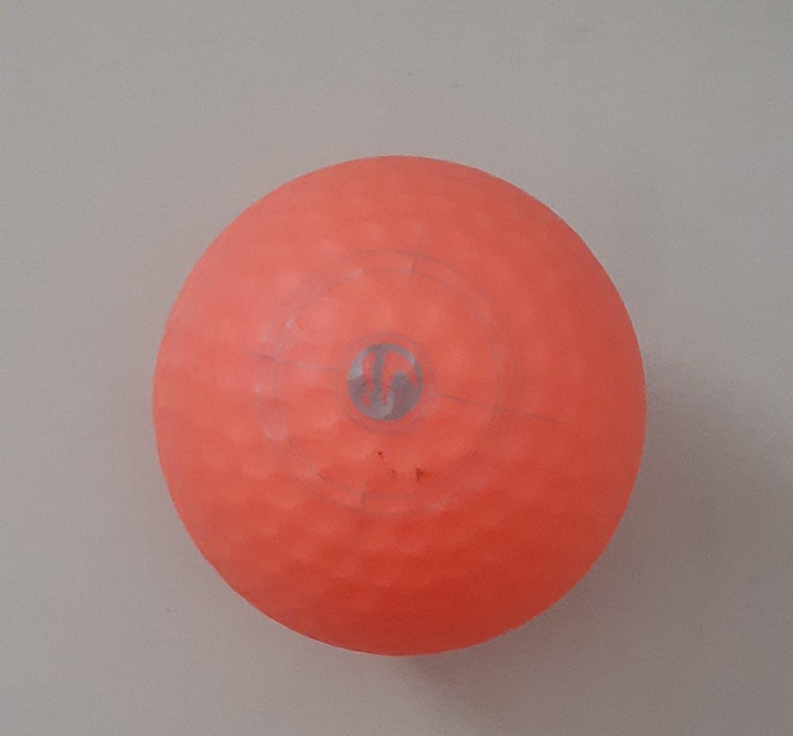
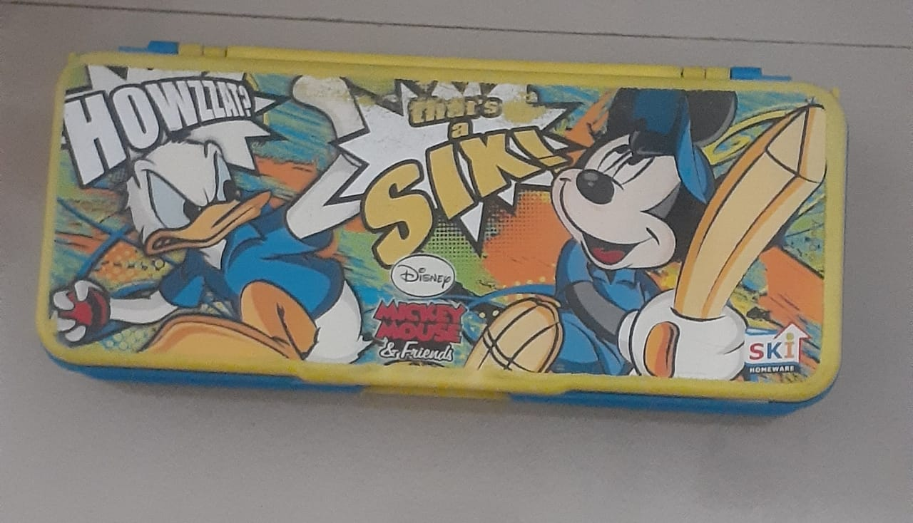
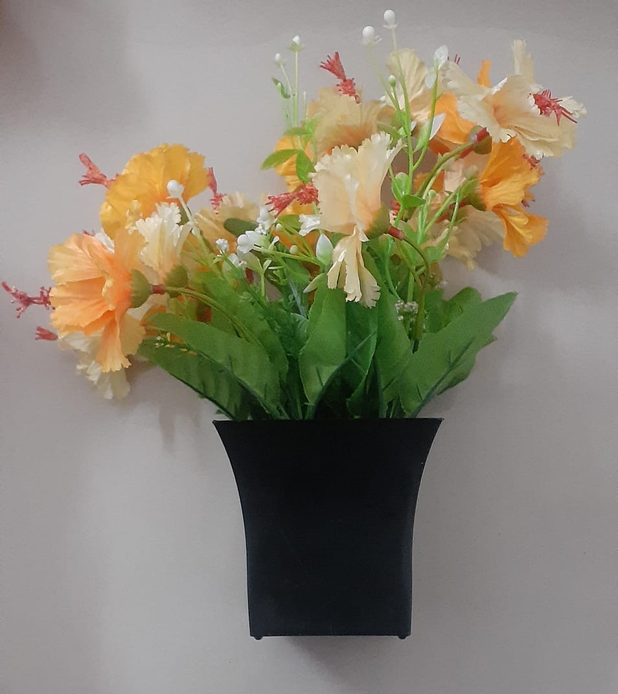
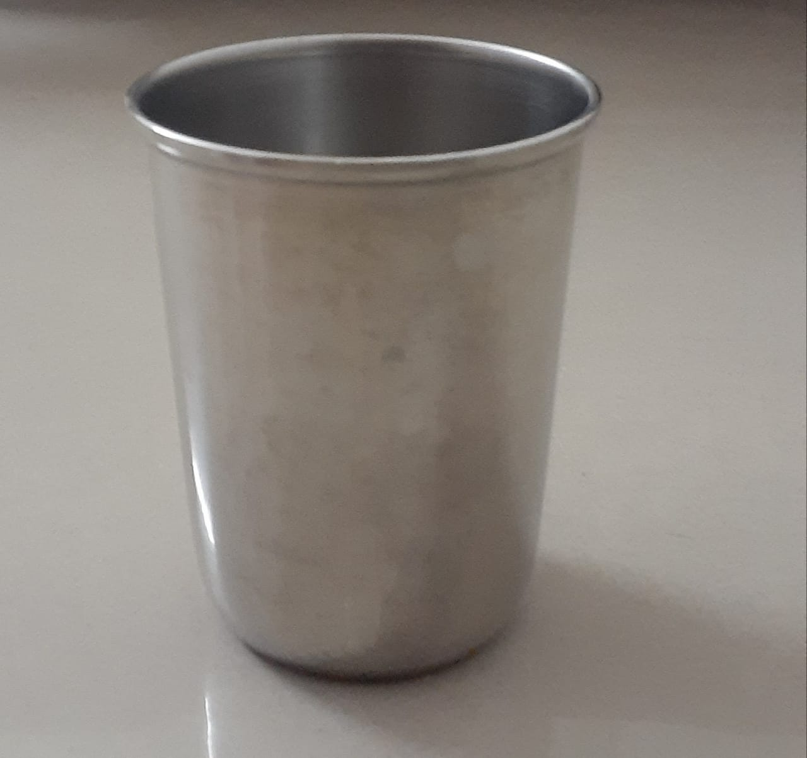
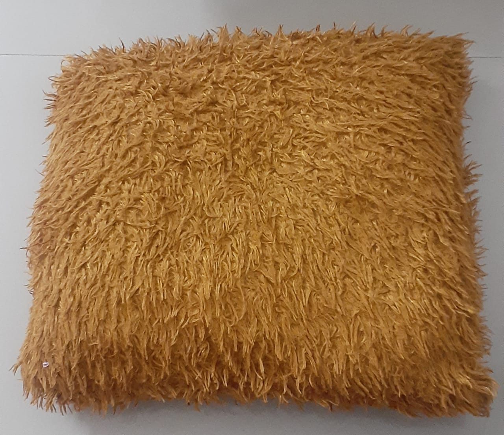
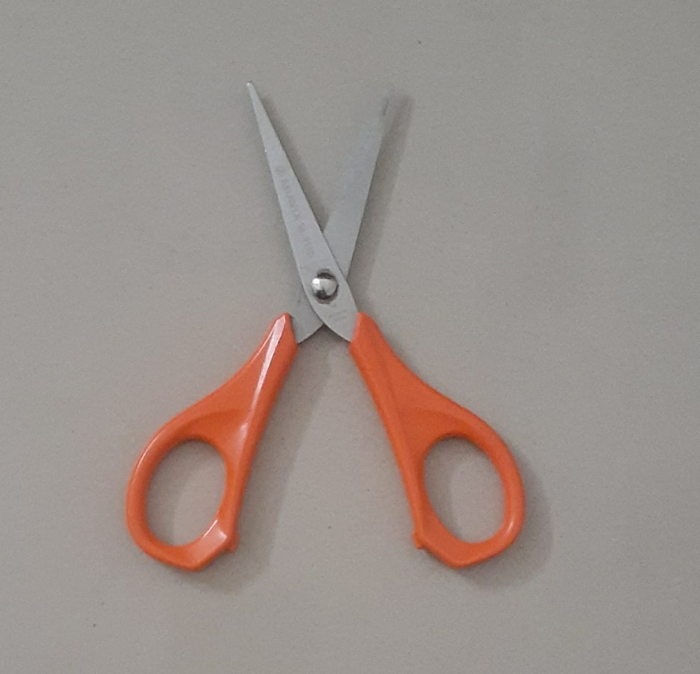
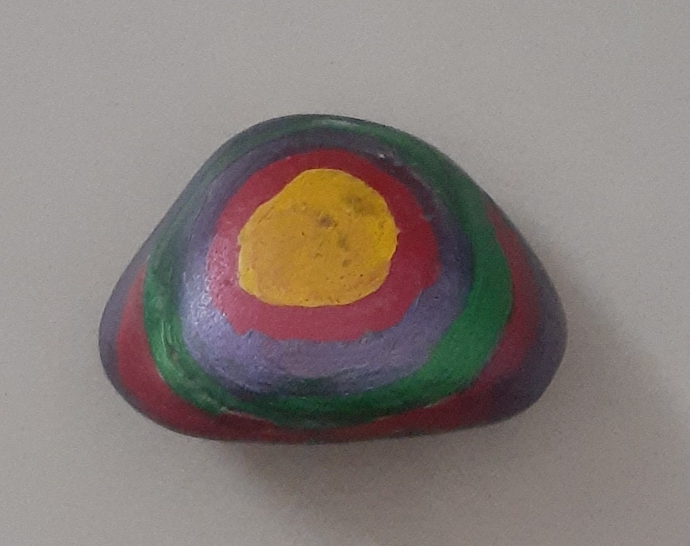
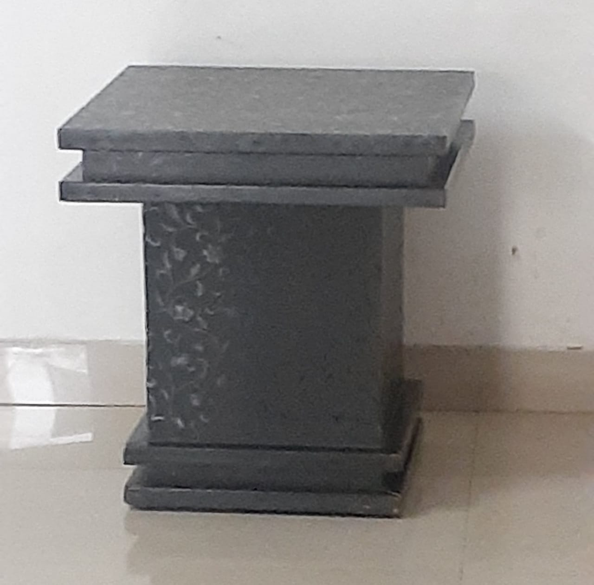
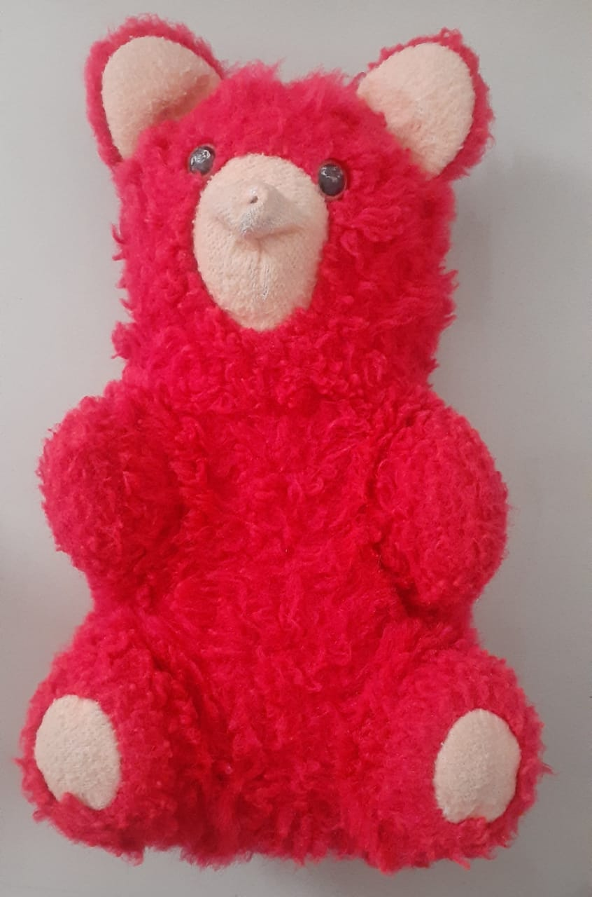

My Case Study
-
Bottle

Ouput On Wolfram Project: vial
Ouput On Mobilenet Model: bottle
-
ball

Ouput On Wolfram Project: Hockey Puck
Ouput On Mobilenet Model: Ballon
-
Compass

Ouput On Wolfram Project: Earthenware
Ouput On Mobilenet Model: Pencil Box
-
Flower Pot

Ouput On Wolfram Project: Bouquet
Ouput On Mobilenet Model: Shower Curtain
-
Glass

Ouput On Wolfram Project: Cup
Ouput On Mobilenet Model: Coffe Pot
-
Pillow

Ouput On Wolfram Project: Millet
Ouput On Mobilenet Model: Dish Rag
-
Scissor

Ouput On Wolfram Project: Scissors
Ouput On Mobilenet Model: MailBag
-
Stone

Ouput On Wolfram Project: Bottlecap
Ouput On Mobilenet Model: Computer Mouse
-
Table

Ouput On Wolfram Project: Lectern
Ouput On Mobilenet Model: Table
-
Teddy

Ouput On Wolfram Project: Cookie Monster
Ouput On Mobilenet Model: Rubber Eraser
Result:I have tested 10 images.MobileNet has predictaded 3 of them correctly and wolfram model has predicted 4 of them correctly.
Therefore according to my case study Wolfram is more accurate.